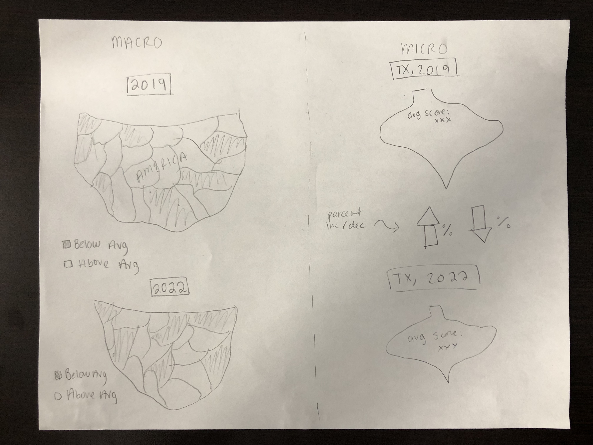
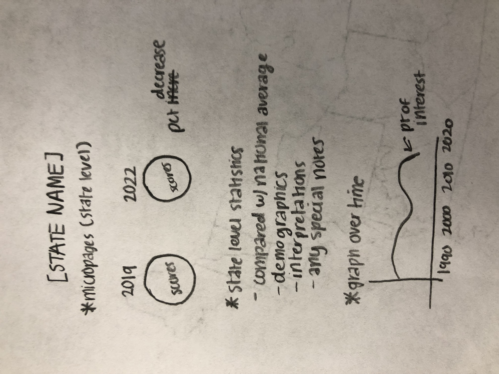

About Our Project
TERMS FROM DATASET
Jurisdiction: state
2019: average score for state in 2019
2022: average score for state in 2022
PROTOTYPES
Diya's prototype:

Isabella's prototype:

When comparing our two prototypes, we noticed several similarities but also some differences. On the macropage, while we both had the idea to shade the states on the U.S. map
based on a particular data point, Diya's idea was to shade based on whether the state's average score was above or below the national average, while Isabella's idea
was to shade based on the percent decrease from 2019 to 2022. We decided to go with the percent decrease comparing the two years since our project aims to show pandemic learning loss from 2019 to 2022.
As for the micropages, we both wanted to focus in on specific states and compare the state averages in 2019 and 2022. We also decided to include Diya's idea to put an outline of the state
on each page and Isabella's idea to put state-specific data on each page (and if time permits, demographics per state) on the micropages. We believe this approach best combines achievability,
discoverability, understandability, usability, and cultural context as per the UX Design Perspectives we looked at. Using the US map is a helpful visual aid when trying to convey a national trend,
which promotes understandability and discoverability. Similarly, clicking on a state on the map to access its micropage advances usability, as it is very easy to get to a micropage from the macropage.
We also didn't want to be too aspirational for our project, so our basic macropage and micropage plans are not super unreasonable, so as to encourage achievability. Finally, we thought that adding in
at least insights, if not actual data, about certain demographics in regards to pandemic learning loss would uphold cultural context, because we understand that there is much more than meets
the eye in a situation like this -- there is a lot to be considered, and although the scope of our project will certainly not do justice to the profound cultural context that needs to be considered here,
we hope to balance achievability and cultural context, and perhaps provide a disclaimer that the data that we are presenting in this project is not enough to make comprehensive interpretations from.
PIPELINE
As this is a collaborative project, both of us, Isabella and Diya, plan to be working together on every piece. However, our preliminary thoughts on
how the work will be divided up are that Diya will be working primarily on the macropage while Isabella will be working primarily on the micropages.
Of course, we plan to work together on every decision and aspect of the project despite our different roles.